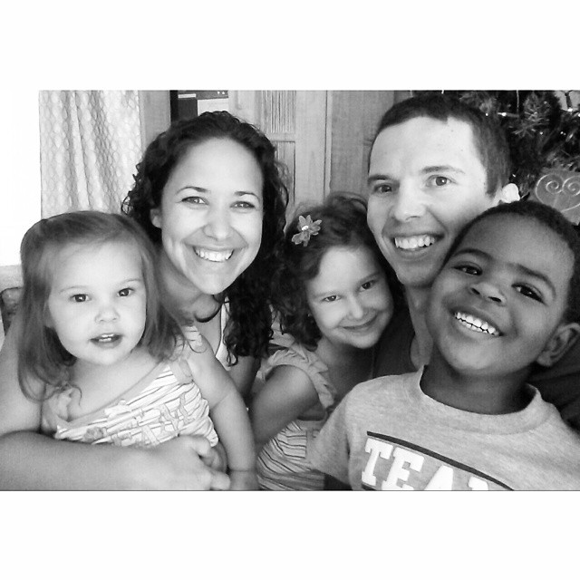

My name is De Wet Blomerus (sounds like "The Vet").
I am married to my best friend, Marysol. We are raising our three children and call Atlanta home.
I'm an avid cyclist, audio book devourer, and burger connoisseur.
I am a software professional who collaborates with business leaders to deliver products users love. I create value by planning, designing, developing, and delivering high-quality software. Understanding development best practices enables me to optimize the delivery process. I uniquely provide technical leadership and intentional mentorship to teams of software engineers.
My expertise spans back-end development, cloud computing, data storage, and front-end. I specialize in technologies that increase programmer productivity, reduce development time, and maximize ROI.
This is my blog. I only post sporadically. It focuses on all things code and sometimes the bigger picture around software creation.
